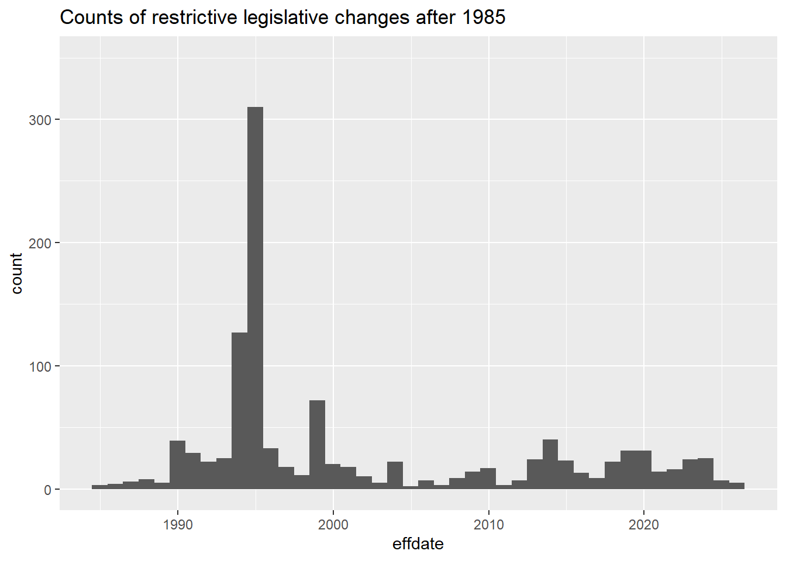
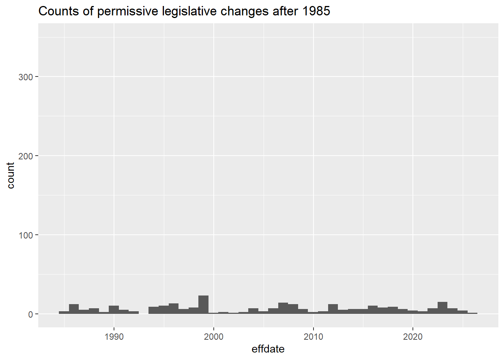

library(readxl)Warning: package 'readxl' was built under R version 4.6.1if (!exists("lawdat")) {
download.file("https://tinyurl.com/randgunlaw", (tf <- tempfile(fileext = ".xlsx")),mode = "wb")
lawdat = read_xlsx(tf, 2)
}Grab the gun legislation data (originally from https://www.rand.org/pubs/tools/TLA243-2-v4.html).
library(readxl)Warning: package 'readxl' was built under R version 4.6.1if (!exists("lawdat")) {
download.file("https://tinyurl.com/randgunlaw", (tf <- tempfile(fileext = ".xlsx")),mode = "wb")
lawdat = read_xlsx(tf, 2)
}Rename the variables for convenience.
library(dplyr)
nd = lawdat |> rename( id=`Law ID`, state=State,
abbr=`State Postal Abbreviation`, fips=`FIPS Code`,
numclass=`Law Class (num)`, lawclass=`Law Class`, lawclasssub=`Law Class Subtype`,
handorlong=`Handguns or Long Guns`, effect=`Effect`,
changetype=`Type of Change`, edatenote=`Effective Date Note`,
effyear=`Effective Date Year`, effmonth=`Effective Date Month`,
effday=`Effective Date Day`, citation=`Statutory Citation`,
content=`Content`, supyear=`Supersession Date Year`,
supmonth=`Supersession Date Month`, supday=`Supersession Date Day`,
ageformin=`Age for Minimum Age Laws`,
handwaitdays=`Length of Waiting Period (days, handguns)`,
addit=`Additional Context and Notes`,
discrep=`Discrepancies`)Use lubridate to create effdate, a Date-valued column.
library(lubridate)
nd = nd |> mutate(effdate=ymd(paste(effyear, effmonth, effday, sep="-")))Visualize the big picture of counts of legislative events classified as Restrictive or Permissive after 1985.
library(ggplot2)
ggplot(nd |> filter(effect=="Restrictive", effdate > ymd("1985-01-01")),
aes(x=effdate)) + geom_histogram(binwidth=365) + ylim(0,350) +
ggtitle("Counts of restrictive legislative changes after 1985")
ggplot(nd |> filter(effect=="Permissive", effdate > ymd("1985-01-01")),
aes(x=effdate)) + geom_histogram(binwidth=365) + ylim(0,350) +
ggtitle("Counts of permissive legislative changes after 1985")
Here we use plotly so that we can hover over elements of the plot to get more information.
library(plotly)Warning: package 'plotly' was built under R version 4.6.1g1 = ggplot(nd |> filter(effect=="Permissive", effdate > ymd("1985-01-01")),
aes(x=effdate, text=paste(state,lawclass))) + geom_histogram(binwidth=365) +
ggtitle("Counts of permissive legislative changes after 1985")
ggplotly(g1)library(plotly)
g1 = ggplot(nd |> filter(effect=="Permissive", effdate > ymd("1985-01-01"), state=="Alabama"),
aes(x=effdate, text=paste(state,lawclass,wrap_hover(content)))) + geom_histogram(binwidth=365) +
ggtitle("Counts of permissive legislative changes in Alabama after 1985")
ggplotly(g1) |> plotly::style(hoverlabel = list(align = "left"))library(plotly)
g1 = ggplot(nd |> filter(effect=="Restrictive", effdate > ymd("1985-01-01"), state=="Alaska"),
aes(x=effdate, text=paste(state,lawclass,changetype,wrap_hover(content)))) + geom_histogram(binwidth=365) +
ggtitle("Counts of restrictive legislative changes in Alaska after 1985")
ggplotly(g1) |> plotly::style(hoverlabel = list(align = "left"))library(plotly)
g1 = ggplot(nd |> filter(effect=="Permissive", effdate > ymd("1985-01-01"), state=="Alaska"),
aes(x=effdate, text=paste(state,lawclass,changetype,wrap_hover(content)))) + geom_histogram(binwidth=365) +
ggtitle("Counts of permissive legislative changes in Alaska after 1985")
ggplotly(g1) |> plotly::style(hoverlabel = list(align = "left"))library(plotly)
g1 = ggplot(nd |> filter(effect=="Restrictive", effdate > ymd("1985-01-01"), state=="California"),
aes(x=effdate, text=paste(state,lawclass,changetype,wrap_hover(content)))) + geom_histogram(binwidth=365) +
ggtitle("Counts of restrictive legislative changes in California after 1985")
ggplotly(g1) |> plotly::style(hoverlabel = list(align = "left"))g1 = ggplot(nd |> filter(effect=="Permissive", effdate > ymd("1985-01-01"), state=="California"),
aes(x=effdate, text=paste(state,lawclass,changetype,wrap_hover(content)))) + geom_histogram(binwidth=365) +
ggtitle("Counts of permissive legislative changes in California after 1985")
ggplotly(g1) |> plotly::style(hoverlabel = list(align = "left"))library(plotly)
g1 = ggplot(nd |> filter(effect=="Permissive", effdate > ymd("1985-01-01"), state=="Mississippi"),
aes(x=effdate, text=paste(state,lawclass,wrap_hover(content)))) + geom_histogram(binwidth=365) +
ggtitle("Counts of permissive legislative changes in Mississippi after 1985")
ggplotly(g1) |> plotly::style(hoverlabel = list(align = "left"))